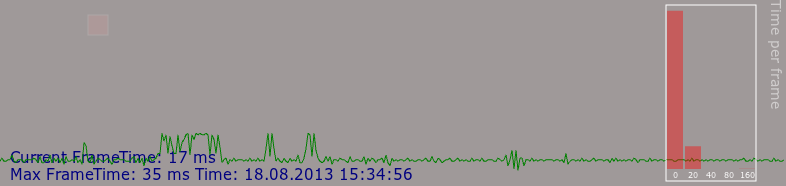
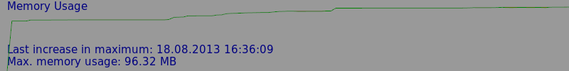

app¶
The libavg app module provides a basis for writing applications. It handles window setup and global keyboard handling, handles global application settings, and provides a number of debugging aids. The two main classes in the app module are App itself and MainDiv. The reference to the module is at /reference/svn/app.html.
A Minimal Example¶
A minimal libavg program using app looks like this:
app_minimal.py:
1#!/usr/bin/env python
2# -*- coding: utf-8 -*-
3
4from libavg import app
5
6class MyMainDiv(app.MainDiv):
7 def onInit(self):
8 pass
9
10 def onExit(self):
11 pass
12
13 def onFrame(self):
14 pass
15
16app.App().run(MyMainDiv())
This program already supports configuration of global parameters (start using ./app.py -h for a list of command line parameters) and a number of debugging keys (press '?' during program execution to get a list of supported keys). Note that we're overriding app.MainDiv here. You usually don't need to override avg.App. The example also shows you the three main method overrides onInit, onExit and onFrame.
Setting Global Parameters¶
The App class has two ways of setting global parameters such as the size of the application window. First, parameters can be set when calling App.run():
1app.App().run(MyMainDiv(), app_resolution='1024x500')
Second, they can be passed to the program on the command line:
1$ python app_minimal.py --app-resolution=1024x500
As you can see, spelling of the parameters is adapted according to the method of setting them: In run parameters, words are separated using underlines, and in command line parameters, they are separated using dashes. If parameters are defined in more than one fashion, environment variables take precedence over App.run() parameters, and command line parameters take precedence over both other forms.
Additional global parameters can be set using the avgrc file or using Environment variables.
A More Complete Example¶
Here is a more complete example of using the app module. The following program shows a moving rectangle. It also handles additional command-line parameters and installs a key handler that allows you to turn the animation on and off:
app_complete.py:
1#!/usr/bin/env python
2# -*- coding: utf-8 -*-
3
4import libavg
5from libavg import app, player
6
7class MyMainDiv(app.MainDiv):
8 # An OptionParser instance is passed to this function, allowing the MainDiv to
9 # add command line arguments
10 def onArgvParserCreated(self, parser):
11 parser.add_option('--speed', '-s', default='0.3', dest='speed',
12 help='Pixels per second')
13 parser.add_option('--color', '-c', default='ff0000', dest='color',
14 help='Fill color of the running block')
15
16 # This method is called when the command line options are being parsed.
17 # options, args are the result of OptionParser.parse_args().
18 def onArgvParsed(self, options, args, parser):
19 self.argvoptions = options
20
21 # This is called as soon as the player is started by the App object.
22 # Initialize everything here.
23 def onInit(self):
24 libavg.WordsNode(text='block_speed=%s app_resolution=%s' %
25 (self.argvoptions.speed,
26 self.settings.getPoint2D('app_resolution')),
27 pos=(10, self.height - 25), parent=self)
28
29 # Create a graphic element that will be animated
30 self.__runningBlock = libavg.RectNode(pos=(0, 100), size=(20, 20),
31 fillopacity=1, fillcolor=self.argvoptions.color,
32 parent=self)
33 self.__shouldMove = True
34
35 app.keyboardmanager.bindKeyDown(text='m', handler=self.__toggleMotion,
36 help='Toggle motion')
37
38 def onExit(self):
39 print 'Exiting..'
40
41 def onFrame(self):
42 if self.__shouldMove:
43 speed = float(self.argvoptions.speed)
44 self.__runningBlock.pos += (speed * player.getFrameDuration(), 0)
45 if self.__runningBlock.pos.x > self.size.x:
46 self.__runningBlock.pos = (0, 100)
47
48 def __toggleMotion(self):
49 self.__shouldMove = not self.__shouldMove
50 # Flash messages are debug notifications that are shown temporarily on top of all
51 # the visible elements.
52 app.flashmessage.FlashMessage('Should move: %s' % self.__shouldMove)
53
54if __name__ == '__main__':
55 # App options (such as app_resolution) can be changed as parameters of App().run()
56 app.App().run(MyMainDiv(), app_resolution='1024x500')
Again, available command line parameters are displayed with ./app_complete.py -h.
App Debugging Aids¶
The debugging aids provided through app help you in tracking memory leaks, finding frame time glitches and testing multitouch functionality using a mouse.
Frame Time Graph¶
Pressing 'ctrl-f' shows a graph that displays the time per frame for the last few seconds of execution. Here is an example:

Note the bar graph at the right. The bars show how the frame times were distributed while the graph was active: The leftmost bin shows all frames that took less than 20ms, the second bin is limited to 40ms, etc. A non-jittery application should show a nearly flat line at the 17ms mark and a bar graph that is empty in all but the leftmost bin.
Memory Usage Graphs¶
app shows the memory used if the user presses 'ctrl-m':

In contrast to the Frame Time Graph, this graph is rescaled continuously so it displays all memory usage changes that happen while the graph is displayed. The top of the graph is also scaled so it corresponds to the maximum memory usage. So, to find memory leaks, press 'ctrl-m' and leave the graph on while interacting with the applications. You will immediately see at which points in time the memory usage goes up (or fails to go down). Some caution is advised, however, since Python heap management and garbage collection tend to reclaim memory at non-deterministic points in time.
An additional graph, the GPU Memory Graph, can be activated by pressing 'ctrl-g' on Linux and Windows systems with NVidia graphics. It shows the amount of graphics card memory being used - e.g. by textures.
Object Count Table¶
To help narrow down memory leaks, it is possible to show a table of allocated objects of various types by pressing 'ctrl-o'. The table contains a row of data per libavg class and shows the number of currently allocated objects of each class in the rightmost column. Pressing 'ctrl-i' causes a snapshot of the data to be taken and displayed to the left of the current data, so you can compare object counts at different points in time easily.